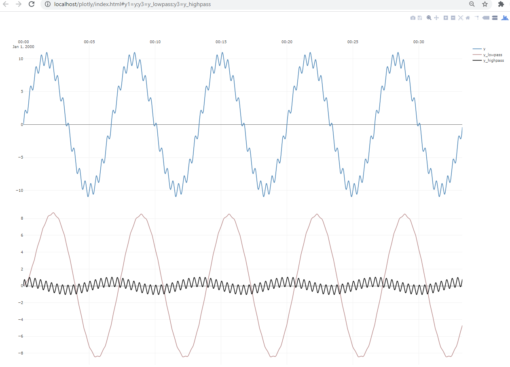

Example 3 : Filtering
TimeSeriesAnalysis includes basic recursive filtering through the classes LowPass, HighPass and BandPass.
To illustrate their capabilities, we create an artificial dataset which is made of two sinusoids sinus1 and sinus2of different amplitudes and
frequencies. Sinuses are implemented in a TimeSeriesCreator.Sinus.
Now, we want to define a LowPass and HighPass filter that can separate out the high-frequency and low-frequency sinuses, and this
is mainly a matter of choosing appropriate filter time constants of either filter.
sinus1 has an period of 400 seconds, and thus goes from maximum to minimum amplitude in about ~200 seconds.
Remembering that a first-order system by rule-of-thumb will take about 5 time-constants to implement 99% of a change,
motivates a time constant of 200/5=40 seconds for the low-pass filter.
By a similar logic,as sinus2 has a period of 25 seconds will go from maximum to minimum amplitude in about 12 seconds,
thus motivating a filter time-constant of about ~3 seconds.
The example code(runnable through the Test Explorer):
int timeBase_s = 1;
int nStepsDuration = 2000;
var sinus1 = TimeSeriesCreator.Sinus(10, 400, timeBase_s, nStepsDuration);
var sinus2 = TimeSeriesCreator.Sinus( 1, 25, timeBase_s, nStepsDuration);
var y_sim = (new Vec()).Add(sinus1,sinus2);
var lpFilter = new LowPass(timeBase_s);
var lpFiltered = lpFilter.Filter(y_sim, 40,1);
var hpFilter = new HighPass(timeBase_s);
var hpFiltered = hpFilter.Filter(y_sim, 3,1);
Plot.FromList(new List<double[]> { y_sim, lpFiltered, hpFiltered },
new List<string> { "y1=y","y3=y_lowpass","y3=y_highpass" }, timeBase_s);
Running the above code results in the below plot.
In the top plot y that is two sinusoids overlayed.
The below plot shows the high pass- and low pass-filtered versions of y and by the naked eye you can see that
the filters have approximately managed to capture and separate out the two components.

Note
If you look closely, you will notice that y_highpass and y_lowpass sinusoids are delayed slightly in comparison to y, and also that the amplitudes of the two signals do not completely match the originals. This is due to the phase-shift and attenuation causes by the recursive filters, and is good to be aware of. It would be possible to get even smoother filtered signals by increasing the filter order from 1 to 2 for either filter, but the penalty would be increased phase-shift.